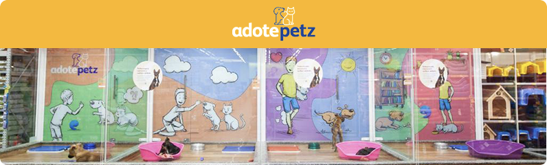

Conheça o "Adote Petz" nossa empresa parceira
Nós fazemos a conexão entre quem deseja adotar um pet com uma rede de mais de 129 ONGs e
protetores parceiros.

COMO FUNCIONA O PROGRAMA ADOTE PETZ?
O Programa Adote Petz é a conexão que faltava entre você e o seu melhor amigo:
O QUE EU DEVO FAZER PARA ADOTAR MEU MELHOR AMIGO AGORA?
voce pode ir nas nossas lojas fisicas ou Como a nossa intenção é fazer você se apaixonar por um pet agora mesmo, disponibilizamos diversos cães e gatos de ONGs/protetores selecionados aqui no nosso site para que você já escolha um. Que tal?
Endereço: Rua dos Animais, 123 - Petrópolis - SP | Telefone: (21) 6666-9999
Apaixados por pets desde 1990 (32 anos de de historia)
Horário de funcionamento: Segunda a Sexta das 8h às 20h | Sábados das 9h às 18h
Atendemos todo o Brasil.Frete gratis para compras acima de (80 Reais)
Duvidas? Entre em contado.
© Pet Shop - Todos os direitos reservados